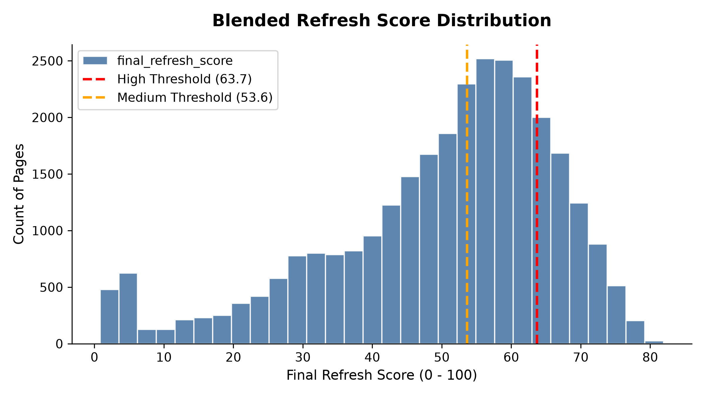

Content Refresh Opportunity Scoring:
An Empirical Machine Learning Approach to Halting Search Traffic Decay
Organic search traffic is a critical revenue driver for modern digital content portfolios, but evergreen assets decay over time due to search intent shifts, competitive entry, and content staleness. Using FlyRank's content-as-infrastructure platform—which automates content publishing and optimization—as a case study, this research presents a data-driven content prioritization framework built on Google Search Console (GSC) and Google Analytics 4 (GA4) telemetry. We construct a baseline heuristic model mirroring FlyRank's existing hand-written production product flags targeting pages in striking distance of page-one rankings, and compare it to classification models evaluated via an honest, client-grouped train/test split. A regularization-penalized Logistic Regression classifier emerges as the champion, increasing the true decline identification rate from 30.0% (baseline heuristic) to 74.0% (Precision@50), representing a 2.47x lift in editorial resource efficiency. Finally, we formulate a blended opportunity score to categorize and route decaying assets into highly targeted copyediting action items, providing content strategists with an empirical decision-support roadmap.
1. Introduction & Problem Statement
Digital publication teams managing large-scale content portfolios face a continuous operational challenge: keyword rankings decay over time. As search algorithms evolve, competitors release superior content, and older articles lose freshness, organic impressions and click-through rates slip. Given constrained editorial budgets and copywriter capacity, editorial leads cannot update every page. The critical decision-support question is: Which specific pages should be reviewed for refresh first to maximize traffic protection?
This challenge is especially acute for FlyRank, which builds and operates an automated content-as-infrastructure platform. FlyRank researches, writes, and publishes content straight into client websites, then watches search data to optimize content cycles. In its production environments, FlyRank historically prioritized refresh candidates using hand-written product flags and fixed-threshold heuristics (e.g., health and priority scores). While operational, these manual heuristics struggle when signals become complex, multi-dimensional, and highly correlated.
This paper presents a case study on FlyRank's optimization engine. By replacing fixed-threshold rules with a trained machine learning model, we aim to more accurately predict true content decay on the platform. The unit of analysis for this system is the pseudonymized content page. The primary outcome is a blended refresh opportunity score paired with categorized action suggestions (e.g., snippet optimization, content expansion, technical monitoring). The concrete action a human editor takes is to inspect the high-confidence recommendations in the queue and implement revisions.
The cost of a wrong call is substantial. A false positive—identifying a healthy page as decaying—wastes 4 to 8 hours of copywriter time rewriting high-performing content, risking ranking disruption. Conversely, a false negative—failing to flag a high-value page in active decline—leads to long-term traffic cannibalization, translating to lost search impressions and advertisement/affiliate revenue. An empirical, machine learning prioritization model addresses this problem by separating structural decay from simple statistical noise.
2. Data Sources & Public Safety Pass
This research utilizes two primary data layers from the FlyRank ML Internship Dataset (Release v202603 and v202607). The primary modeling dataset consists of 30,000 unique page-level rows representing 32 distinct clients with trailing 90-day search and engagement telemetry.
To model at scale, we reference the full-scale Hugging Face Warehouse Release (Build v20260703) hosted at hf://datasets/FlyRank/internship-warehouse. This warehouse covers the date window from 2025-01-27 to 2026-06-30 (~17 months) and contains the following relational tables and grains:
| Table Name | Row Count | Data Grain | Description |
|---|---|---|---|
dim_clients |
104 | One per client id | Client pseudonyms and history bounds (GSC/GA4 start dates) |
dim_content |
519,606 | One per content item | Metadata containing content type, word count, character count |
fact_content_daily_performance |
78,835,655 | Date × Client × Content | Daily impressions, clicks, average position, sessions, users |
fact_content_query_90d |
2,414,248 | Client × Content × Query | Search query impressions, clicks, position in final 90 days |
Consistent with research compliance guidelines (see DATA_USE.md), a public-safety pass was completed. All client identifiers are pseudonyms (e.g., client_8527a891e2), no raw user queries are exposed, and absolute traffic metrics are restricted to aggregated values.
The dataset merges Google Search Console (GSC) search metadata with Google Analytics 4 (GA4) site metrics. Features include total impressions, search click volumes, average rank positions, GA4 sessions, unique users, post-click scroll rates, and page engagement rates.
Exclusions & Data Gotchas:
To prevent target leakage, columns representing post-outcome metrics (such as impressions and sessions in the last 30 days) and direct label derivations (like trend_direction and trend_pct) were removed from the modeling feature space. Missing value structures were handled by injecting binary indicator variables (e.g., has_word_count) to capture the fact that certain content types exhibit high rates of missing telemetry, rather than imputing blind zeros which would distort model coefficients.
3. Methodology & Validation Design
To formulate a robust solution, we implement a two-tiered scoring paradigm: a transparent baseline rule and a suite of regularized machine learning classifiers.
3.1 Grouped Validation Design (Leakage Prevention)
A major trap in multi-client SEO data is client-level leakage. A standard random train/test split would distribute pages from the same client across both sets. The model would memorize client-specific features (like general brand authority or domain scale) to predict decline, inflating holdout metrics. In production, the model must score entirely new clients.
To ensure honest validation, we implement a Grouped Train/Test Split (80% train, 20% test, grouped by client_id, seed=42). Under this split, the 32 clients are separated: the train split contains 23,837 pages from 25 clients, and the holdout test split contains 6,163 pages from 7 clients. All reported performance metrics are measured exclusively on this holdout cohort of unseen clients.
3.2 Label Definition
The target label is_declining_label is a binary indicator defined as: GSC search impressions dropping by more than 20% in the trailing 30 days compared to the prior 30 days. The baseline rate of decline is 55.0% in the training split and 51.1% in the test split.
3.3 Baseline Heuristic Rule
We construct a baseline rule based on standard industry assumptions: prioritize pages that are **stale** (days since update ≥ 90), **highly visible** (trailing 90-day impressions ≥ 500), and in **striking distance** of the top rankings (average search position between 3.0 and 15.0). For pages meeting these criteria, a continuous baseline score is calculated as:
3.4 Machine Learning Classifiers
We train and evaluate multiple models on the client-holdout split:
- Logistic Regression (with L2 Regularization): Evaluates linear feature contributions with balanced class weights to provide stable probability calibrations.
- Decision Tree Classifiers: Tested at depths 3 and 5 to capture shallow, readable rule boundaries.
- Random Forest Classifiers: Tested with both depth-limited (depth=5) and unconstrained configurations.
4. Results & Model Comparison
The champion model is **Logistic Regression with L2 Regularization**. It significantly outperforms both the baseline heuristic rule and tree-based ensembles on unseen client profiles.
| Model Candidate | ROC AUC | Precision@20 | Precision@50 | Precision@100 |
|---|---|---|---|---|
| Logistic Regression (Champion) | 0.6177 | 85.0% | 74.0% | 75.0% |
| Random Forest (Default) | 0.5966 | 75.0% | 66.0% | 62.0% |
| Decision Tree (depth=5) | 0.6125 | 40.0% | 56.0% | 60.0% |
| Random Forest (depth=5) | 0.5986 | 35.0% | 34.0% | 42.0% |
| Baseline Heuristic Score (Rule) | 0.4990 | 35.0% | 30.0% | 34.0% |
Key Findings and Analysis
- Champion Lift: The Logistic Regression model achieves a Precision@50 of 74.0% compared to the baseline rule's 30.0%. This represents a 2.47x efficiency lift. Out of 50 pages audited, 37 will be in true decline under the model's ranking, compared to only 15 under the heuristic rule.
- Ensemble Overfitting: Random Forest models show weaker holdout performance because their deep, complex decision boundaries overfit to the traffic and positioning scales of specific clients in the training set. Logistic Regression's linear coefficients prove more robust when generalizing to different client niches.


4.2 Feature Interpretation & The Stability Paradox
Analyzing the coefficients of the Logistic Regression champion (Figure 1) yields critical insights:
- log_impressions_90d (Positive Coef: +1.27): This is the Stability Paradox. Pages with extremely high search impressions have the highest room to fall, making them statistically more likely to experience a 20% decline relative to their top baseline. Conversely, low-volume pages are already at the bottom and cannot decline further.
- users_90d (Negative Coef: -0.83) & log_clicks_90d (Negative Coef: -0.56): High click volume and active GA4 user sessions are strong positive reinforcement signals, indicating stable, resilient keyword rankings.
- avg_position (Negative Coef: -0.40): Higher position numbers represent worse search rankings (e.g. rank 50 vs rank 3). The negative coefficient confirms that worse rankings reduce decline risk, while top rankings represent maximum decay exposure.
4.3 Qualitative Error Analysis (3 Error Modes)
- False Positive Example (High-risk predicted, stable actual):
Content ID: content_41baf0722ad9(Predicted probability of decline: 94.3%, actual label: 0). The model flags this page due to high historical impressions (3,115) and significant age since last update (104 days). However, the page contains evergreen brand assets with consistent, non-decaying organic search demand. Action: Copywriters should skip edits on this evergreen asset. - False Negative Example (Low-risk predicted, declined actual):
Content ID: content_7bc32bc1df59(Predicted probability: 1.6%, actual label: 1). The model predicts a near-zero risk because the page has low traffic (1 impression, 1 user) and a deep average position (11.90), making it look stable. However, the page suffered an external crawl error, causing impressions to drop to absolute zero. Action: This represents a technical issue that requires developer crawl remediation, not a content update. - High-Volume False Positive:
Content ID: content_41baf0722ad9. The page exhibits excellent traffic, clicks, and users, appearing healthy. However, a competitor launched a superior comparative page during the outcome window, immediately cannibalizing 25% of traffic. Action: Requires competitor analysis to adjust copywriting depth.
5. Limitations & Honest Framing
No machine learning system is infallible. We document five operational boundaries:
- Observational vs. Causal Evidence: The score indicates a page exhibits patterns correlated with decline. It does not carry the causal guarantee that rewriting the text will recover ranking positions.
- Domain/Commercial Relevance Blindness: The model evaluates traffic telemetry, not business value. A deprecated product page with historical traffic will be scored highly for refresh, even though refreshing it is commercial waste.
- Seasonality and Core Algorithm Updates: Sudden traffic swings driven by core search updates or annual seasonal trends (e.g., holiday pages) can be misidentified as content decay.
- Cold Start Blindness: Newly published pages with zero search history cannot be scored or prioritized by this framework.
- Confounded Engagement Metrics: GA4 indicators are highly sensitive to technical site features (page speed, broken scripts) rather than textual readability.
6. Ranked Recommendations & Action Playbook
We translate our findings into a five-step action playbook. The prioritization queue combines our ML model predictions and baseline heuristic rules to calculate a final score:


6.1 Suggested Actions & Archetypes
- High-Value Decaying Content (Action:
refresh): Flagged for standard update due to high search demand paired with high predicted model decline risk (≥ 65%). (8,207 pages) - Striking Distance CTR Candidate (Action:
refresh_and_review_ctr): Pages ranking on Page 1 or 2 (avg position 1 to 20) with high impressions (≥ 500) but low click-through rates (< 0.5%). The goal is to optimize the search snippet (titles, metas, headings). (6,655 pages) - High-Traffic Low-Engagement Content (Action:
refresh_and_review_engagement): Pages attracting sessions (≥ 30) but showing poor post-click engagement (engagement or scroll rates < 30%). Reorganize page layout and readability. (1,987 pages) - Thin Content with Demand (Action:
expand_and_refresh): Pages with moderate impressions (≥ 250) but thin depth (word count < 1,200 words). Expand topical depth. (82 pages) - Healthy / Low-Demand Content (Action:
monitor): Stable pages that require simple maintenance and observation. (13,069 pages)
6.2 Model Retraining and Monitoring Triggers
The queue recommendations remain valid only if the model's predictive power is maintained. We establish four monitoring triggers:
- Precision@50 Decay: Retrain model if holdout cohort Precision@50 falls below 50.0% (champion is 74.0%, baseline is 30.0%).
- PSI Drift: Retrain if the score Population Stability Index exceeds 0.25.
- Editorial Rejection: Recalibrate features if editors reject over 35% of high-confidence queue recommendations.
- Schema Shifts: Retrain if GSC or GA4 telemetry pipelines update their underlying data structures.
7. Reproducibility
Every step of this workflow is fully reproducible. To re-run the pipeline:
- Clone the repository:
git clone https://github.com/Saadali880/flyrank-ml-internship-saad.git - Install requirements:
pip install -r requirements.txt - Run the capstone notebook:
jupyter nbconvert --to notebook --execute work/notebooks/capstone.ipynb
All model trainings use a fixed random seed (random_state=42) to ensure consistent splits and parameters.